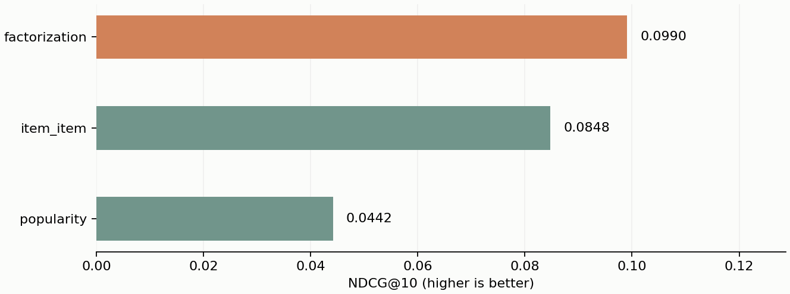

Chronologiczny podział dni 70/15/15. Katalog tylko z train. Pełny ranking 1600 produktów; popularity, item-item i SVD. / Chronological day split 70/15/15. Train-only catalog. Full ranking of 1600 products; popularity, item-item and SVD.

| Split | Model | Metric | Value |
|---|---|---|---|
| validation | popularity | Recall@10 | 0.02516 |
| validation | popularity | NDCG@10 | 0.04420 |
| validation | popularity | coverage | 0.03812 |
| validation | popularity | users | 1233 |
| validation | item_item | Recall@10 | 0.06364 |
| validation | item_item | NDCG@10 | 0.10223 |
| validation | item_item | coverage | 0.41250 |
| validation | item_item | users | 1233 |
| validation | factorization | Recall@10 | 0.07292 |
| validation | factorization | NDCG@10 | 0.10786 |
| validation | factorization | coverage | 0.41500 |
| validation | factorization | users | 1233 |
| test | popularity | Recall@10 | 0.02568 |
| test | popularity | NDCG@10 | 0.04417 |
| test | popularity | coverage | 0.03812 |
| test | popularity | users | 1426 |
| test | item_item | Recall@10 | 0.05735 |
| test | item_item | NDCG@10 | 0.08478 |
| test | item_item | coverage | 0.44625 |
| test | item_item | users | 1426 |
| test | factorization | Recall@10 | 0.06571 |
| test | factorization | NDCG@10 | 0.09904 |
| test | factorization | coverage | 0.41750 |
| test | factorization | users | 1426 |
Ocena ograniczona do znanych produktów nowych dla użytkownika; osobne wyniki cold start. Nie zmierzono wzrostu konwersji. / Evaluation covers known-catalog, new-to-user items, with separate cold start. Conversion uplift was not measured.
UCI Online Retail, CC BY 4.0Reproduce: evaluate.ps1